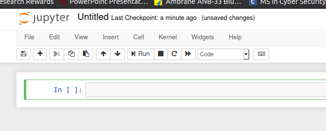
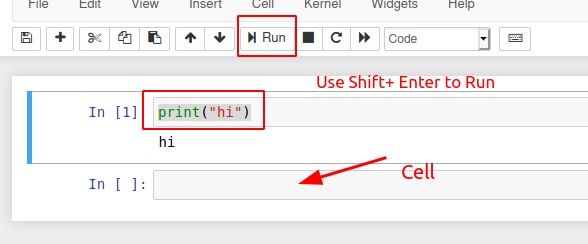
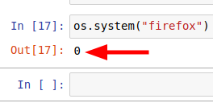
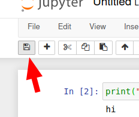
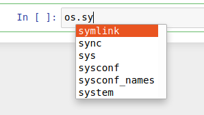
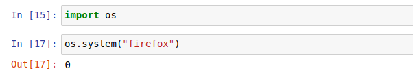

Working with python
Create a file
It will open a new tab with a new notebook

Its similart to REPL

Note:
One cell can be run at a time
Esc + d d to delete a cell
If the return Value is zero then the command executed successfully

But if any other thing return then there is error
~~~~~~~~~~~~~~~~~~~~~~~~~~~~~~~~~
Notebook can also be saved

~~~~~~~~~~~~~~~~~~~~~~~~~~~~~~~~~
To get the helper screen press TAB

~~~~~~~~~~~~~~~~~~~~~~~~~~~~~~~~~
Task to open firefox from Jupyter

~~~~~~~~~~~~~~~~~~~~~~~~~~~~~~~~~